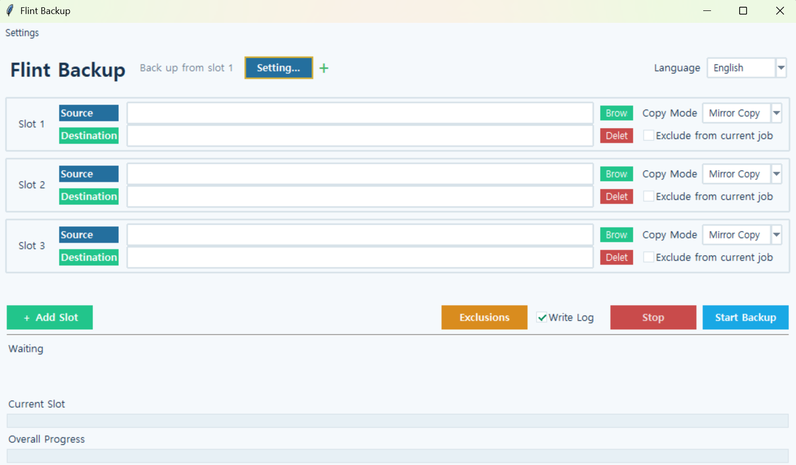

Flint Backup
Version: 1.0.0
Flint Backup
Flint Backup is a Windows backup utility that lets you back up files and folders to a specified destination using mirror backup, standard copy, or ZIP compression.
You can create multiple backup slots and run them sequentially. Frequently used slot configurations can be saved as up to 8 separate presets and switched between as needed.
How to Use
- Select the folder or file you want to back up in each slot.
- Choose the destination where the backup will be stored.
- Select a backup mode:
Mirror,Standard, orZIP. - Add more slots if needed, or select
Exclude from Current Runto skip a slot. - Click
Start Backup. - Monitor the current progress, files copied, files reused, and overall progress at the bottom of the window.
Backup Modes
Mirror: Maintains the same directory structure as the source, updates only changed files, and removes items from the backup that no longer exist in the source. Unchanged files are reused whenever possible instead of being copied again.Standard: Copies source files and folders to the selected destination.ZIP: Compresses the source files and folders into a ZIP archive.
When performing mirror backups from virtual drives such as Google Drive, Flint Backup first compares file sizes and modification times. If only the modification time differs, it checks the actual file contents to avoid unnecessarily copying identical files.
Key Features
- Back up folders and individual files
- Mirror, Standard, and ZIP backup modes
- Incremental mirror backups that reuse unchanged files
- Sequential execution of multiple backup slots
- Save and switch between up to 8 slot configuration presets
- Customize preset names and colors, and rearrange their order
- Rearrange backup slot order
- Exclude individual slots from the current backup run
- Display current progress, copied file count, and reused file count
- Show progress for both the current slot and the entire backup operation
- Display the path of the file currently being processed
- Optional SHA-256 integrity verification
- Stop an ongoing backup
- Automatically save backup slots and application settings
- Automatically remember window size and position
- Backup operation logging
- Korean and English interface support
- No external dependencies required
Run
python backup.pyNote: If you are using the standalone executable (EXE), you do not need to run the Python command.